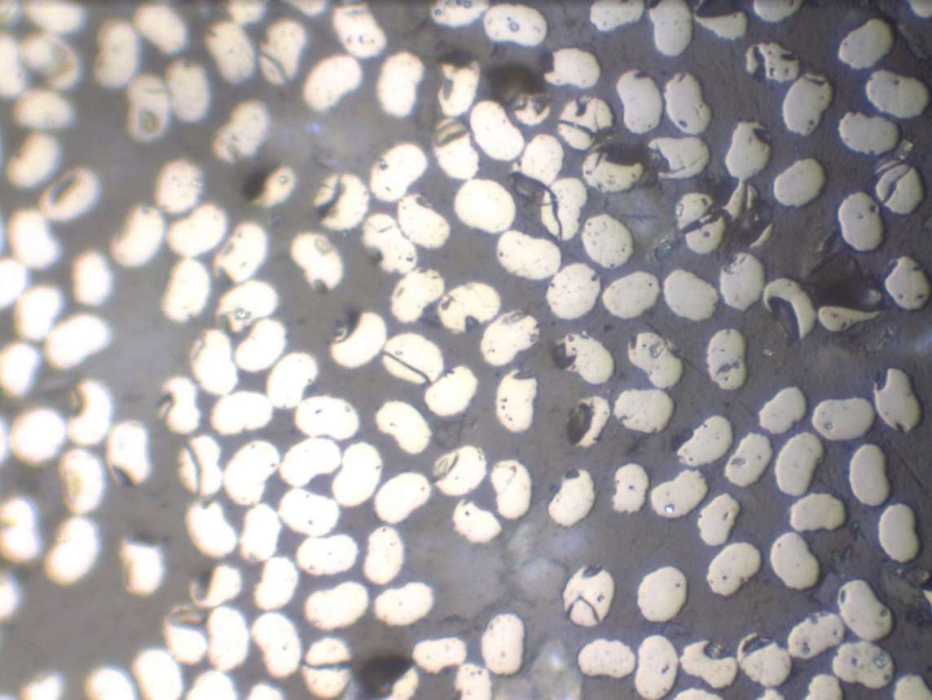
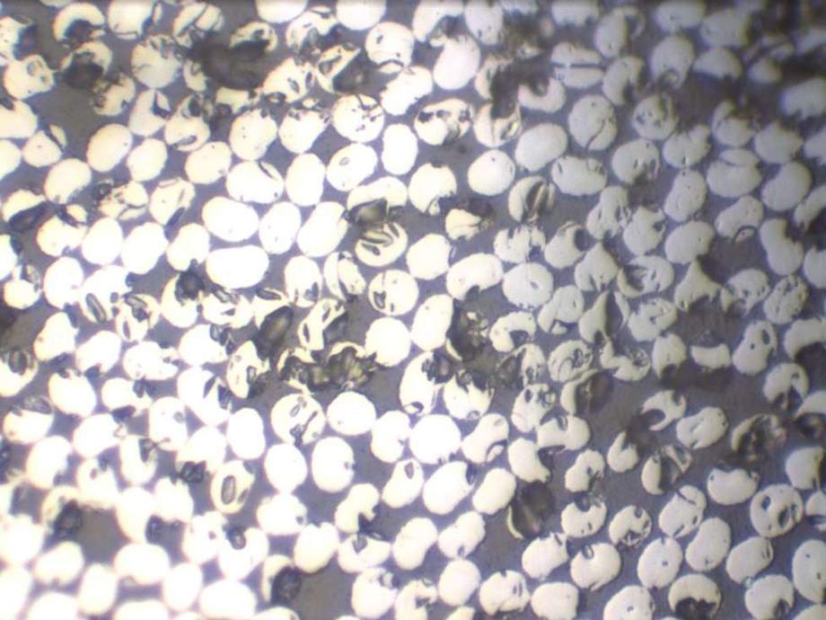
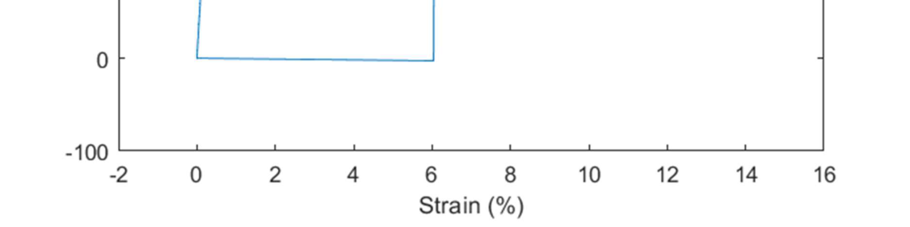
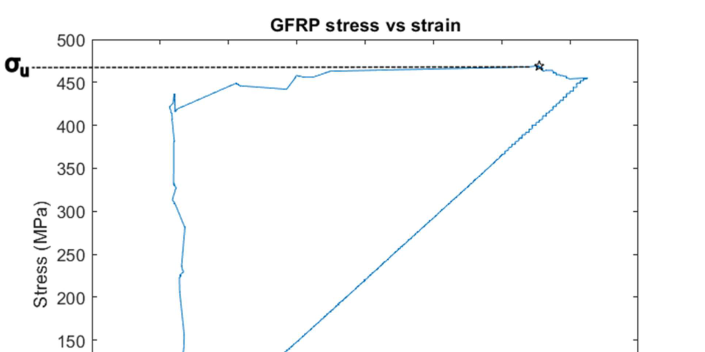

Approach
Each rod was sanded, cleaned with acetone, and fitted with 6061-T6 aluminum gripping tubes bonded with cyanoacrylate adhesive. An LVDT extensometer measured elongation at the gauge section. Young’s modulus was computed as the average of σ/ε at five points in the elastic region. Ultimate stress was the maximum recorded value; yield stress for the aluminum was found by the 0.2% offset method.
For CFRP, the standard stress-strain method severely underestimated E (by ~49%). An independent estimate was obtained using the rule of mixtures Ec = EmVm + EfVf, where the fiber volume fraction Vf was measured by counting and sizing fibers in polished cross-section microscopy images. Strength-to-weight ratios were computed by dividing ultimate stress by the measured density of each rod.



